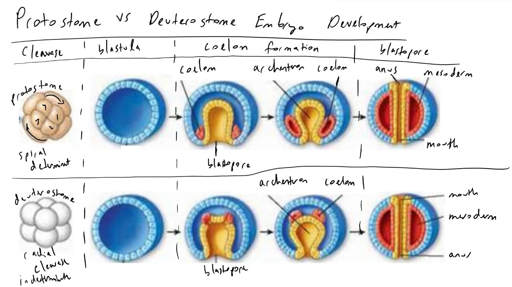

Diversity of Animals
Choanoflagellates
- Sing-celled flagellated protists which are the closest living relatives of animals
- Form colonies, cooperative groups that are considered and eveolutionary stepping stone toward multicelluarity
The Kingon Animalia
- Animals are ingestive heterotrophs:
They obtain energy and carbon by bringing food into the body and digesting and absorbing it internally.
- All animals are consumers, and some are decomposers
- Animals exhibit locomotion (self-directed movement of the whole body) at some stage of the life cycle
The evolutionary origins of animalia
- Spones are the oldest animal lineage, followed by the cnidarians, which include jellyfish and corals
- Protosomes and deuterostomes are two broad groups of animals, distinguished by the way their embryos develop

Characteristics of Animals
- Animal cells lack a cell wall and instead most are attached to an extracellular matrix
- Patches of proteins that make up cell junctions attach animal cells to each other and to
the extracellular matrix
- All except sponges
- Presence of true tissues
- Pattern of gastralation during embryo development
- Body symetry
- Organs and Organ systems
- Body cavities
- Semgentation of the body
Most animals have true tissues
- Cnidarians are one of the firest animal groups to have evolved true tissues
- Specialized tissues facilitate complex animal behaviors
- Cnidarians have a network of interconnected nerve cells and ligh-sensitive regions know as eye spots
- Muscle tissue is found in all animals excpet sponges
Most animals have symmetrical bodies
- Most animals exhibt either radial or bilateral symetry
- Radial symmetry gives sessile animals greater access to their enviornment
- Bilateral symmetry enables rapid and efficient locomotion
- Bilateral symmetry leads to cephalization, (cepha:head, cephalization=formation of head) the concentration of sensory at the anterior end,
which made directional movement more effective
Most animals (Protosomes and Deuterostomes) have organs and organ systems
- An organ has a definite shape, size, and location in the body
- Two or more organs working together form an organ system
- The evolotuion of organ systems has allowed animals to achieve more complex behaviors, including the ability to reflect on the nature of all life
Some animals evolved complex body cavities
- Body cavities allow animals internal organs to grow freely and function indepenedently
- Most body cavities also provide padding, protection, and support for organs
Semgentation enables division of labor among body parts
- Many animals have repeated units called segments
- Appendages are specialized body parts taht arize from body segments and enable divers adaptations to new habitats or new modes of life
The First Invertebrates:
Sponges, Jellyfish, and Relatives
- Animal lineages diverge very early in animal evolution
- Sponges, jellyfish, corals are
PORIFERA- Sponges
- 10,000 species in three main groups
- Exclusively aquatic, mostly marien
- Tiny to huge ( 15ft tall - loggerhead sponges)
- 6 cell types in sponges (humans have >250)
- No true mouth
Sponges are the simplest animals
- Sponges are filter feeders that feed on bacteria, amoebas, and other organisms they acquire from their enviornment
Sponges have specialized cells, but lack true tissues
- A sponge is a loose collectin of cells, witheach cell functioning largely indpenedntly from other cells
- Chonaocytes, or collar cless, line the canals and interior chambers of sponges.
- Spicules are sharp structures that help protect and provide structural support to sponges
Sponge Reproduction
- Sexual and asexual
- Asexual - regeneation through breaking off pieces
- Sexual - some are monecious and some are dioecious
Sponge ecology
- Many are mutualists with fish, mites, snails
- Can grow on other animals
- Can be used as comouflage
- Few predators, including ony fish, turtles, some fly larvae
- Substrate limited competition; coral are competitiors
Human Impacts
- Bath sponges; 5 years to marketables size
- Bioactive compounds - antibiotics, anti-inflammatories
- Materials science - strognest "glass" structure known, silica spicules transmit light better than commerical optic fibers
- Aquarium trade
- Bottom trawling
CNIDARI - Jellyfish and allies
- 9,000 species alive today
- Jellfish, hydras, sea anemones, corals, sea fans, sea whips
- Longest fossil history of any animal
- Simplest animal with true tissues
- All are aquatic, dominantly marine
- Many are colonial
Cnidaria - Body Forms
- Radial Symmetry
- Polymorphic - 2 or more separate body forms with alternation between forms
- Polyp: tubular body, susally sessile, benthic
- Medusa: free floating, pelagic
Cnidaria - Cells and Tissues
- Two true tissue layers - ectoderm and endoderm with mesoglea between
Feeding and Digestion
- All are carnivores
- Most have rings of tentacles surrounding mouth
- Cnidocytes- stinging cells to capture prey; inside each cell is a nematocyst (harpoon) with a tactile trigger
- Discharge as a result of high osmotic pressure
- Each cell operates independently
- Discriminate in firing
- Must grow new nematocyst after firing
Body Systems & Life Spans
- No repiratory or excretory systems
- No head, no cephalization no central nervous system
- Nerve net is simple - coordinating body contraction
- Can be long-lived
- Jellyfish up to 10 years
- Sea anemone = 80 years until tank accidentally drained
Reproduction
- Sexual and asexual
- Asexual via budding
- Sexual - diecious
- Mass spawing
- Embryo = planula
- Some can switch sexes
Major Groups
- Hydrozoa (hydra)
- Scyphonzoa (jellyfish)
- Cubomedusa (box jellyfish)
- Anthozoa (corals, sea anemonmes
Cnidarians & Humans
- Jellyfish are food
- Singing cells can be lethal
- Pharmaeuticals - anti-inflamatries
- Cariac stimulants from sea anemones
- Green fluoresecent protein from jellyfish many research applications
PROTOSTOMES
- Protosomes comprise of the largest branch of the evolutionary tree of animals, and range in size
from microscopic rotifers to the colossal squid
PLATYHELMINTHES- Flatworms
- 3 embryonic tissue layers:
- ectoderm
- mesoderm
- endoderm
- True organs
- Acoelomate (no body cavity)
Turbellaris
- Free-living (non parasitic
- Predators and scavengers
- Ocelli: light sensing organs
Cestoda & Trematoda
- Parasites
- Complex life cycles
- Adaptations:
- Strutures to penetrate and attach
- Reduction in unnecessary structures
ROTIFERA
- 2,200 living species
- Discovered when microscopes were developed
- Freshwater habitats
- "wheel-bearers"- ciliated crown that looks like rotating wheels
- Import aquatic food
ECTOPROCTA
BRACHIOPODA
- "arm-foot"
- 325 livin species, 30,000 fossils
- Filter feeders with hard protective shell
- Mostly sessile, bottom dwelling
ANNELIDA
- 15,000 species in land and water
- Elongated, segmented body
- True coelom
- Cephalization
- Hydrostatic skeleton - burrowing, crawling, swimming
-
Diversity
-
Ecology and Relevance
- Detritus food chains
- Prominent in marine food webs
- Parasites
- Medicinal uses of leeches
- Research models
MOLLUSCA
- Second larges phylum of animals
- Most versatile body plan of all animals
- Snails, limpets, clams, mussels, chitons, octopus, oyster, squid, slug, nautilus, tooth shells
- 8 different classes, but most species in bivalves and snails
- Marine, freshwater, and terrestrial
- Characteristics:
- A muscular foot at the base of the body
- A compact grouping of internal organs called the visceral mass
- A protective mantle enclosing the body cavity and the visceral mass, which
also secretes a shell in some species
-
3 Groups:
- Bivalves, or shellfish, are mollusks that sheler their soft bodies inside a hard shell
- Most gastropods (bell-foot) have a spiral shell on the dorsal side of the animal
- Cephalpods (head0foot) are marine animals that include the nautilus, squid, and
cuttlefish, and are thought to be the most intelligent inverebrates
- CEPHALPODS
- Complex eye, onvergent with vertebrate eyes
- Chromatophores: color cells
- Extesive nervous system (multiple brains)
-
MOLLUSCA
- Important in food webs
- Indicator species
- Invasive species
- Relevance:
- Currency - as money
- As food
- Shell collecting/jewelry
- Ink and dyes
- Materials science - byssal threads
Some protosomes shed their outer covering to enable growth
- Ecdysozoans are the very large group of protostomes that shed their outer covering on a regular basis in a process
- Ecdysozoans have a protective noncellular layer, the cuticle, composed of organic material secreted...
ARTHROPODA
Largest Phylum among Eukaryotes
- Arthropodsshare these common features
- Jointed appendages facilitate quick and precise movement of body parts
- A cutuicle made from chinitn that forms a hard exoskeleton
- A segmented body plan at some stge of the life cycle
- 1.1 million descibed species
- 2-3 million more unknown
- 2/3 of all animals
- Widely distributed
- Great fossil record
- First in flight
- First to colonize land
Segmented Body plan
- Segmented body plan allows for lots of adaptive modifications
- Fusion segments
- Hard exoskeleton
5 Groups of Arthropoda
Trilobita>
- All extinct
- Mostly marine
- 4,000 species
Myriapoda
- 2 classes: centipedes and millipedes
- Mostly terrestrial
- Distinct head, one pair of antennae
- Many similar segments
Chelicerata
- Contains: Spiders, horseshoe crabs, ticks, mites, scorpions
- Mostly terrestrial
- Chelicerae and pedipalps for feeding
- No antennae
- Cephalothorax
Crustacea
- Shrimp, crabs, crayfish, barnacles
- Mostly marine
- Mandibles, 2 pairs and antennae
- Many appendages and diversification and appendages
- Cephalothorax
Hexapoda
- Most successful animal group
- 87% of all arthropods
- 62% of all animals
- Mostly terrestrial
- Rarely marine
- Mandibles, one pair of antennae
- Head, thorax, abdomen
- 3 pairs of legs, 2 pairs of wings (variation in this)
Insects
- Among the earliest animals on land, insects exhibit many adaptation for a terrestrial existnece:
- Exoskeleton, protects and prevents the soft body tissues from drying
- Internal gas exchanges surfaces, so moist surfaces are protected
- Flight is key to the success of insects
Insects - Flight
- move toward reduction in wing number
- gliding
- Up from water hypothesis
Adaptive Value of Complex Life Cycles
- Metamorphosis is the multistep process through which immatue forms of animals are transformed into adults
- Incomplete metamorphosis describes gradual changes from one developmental stage to the next
- Complete metamorphosis describes dramatic develomental changes from one stage to the next
-
By having two verty different body froms in their life cycle, metamorphic insects can pack two very different
but highly sucessful and highly specialized modes of living into the life cycle of one animal.
ECHINODERMATA
- "hedgehod-skin"
- 7000 extant species, 13000 extinct species
- Sea stars, urchins, sand dollars, sea cucumbers, etc.
- Bilaterally symmetrical as larbae and radially symmetrical as adults
Echindoderms use a water vascular system for locomotion and gas exchange
- Some echinderms are sessile, while others move with tube feet that use a water vascular syste to apply
suction to surfaces and prey
- The circulation of water through a system of branches canals facilitates gas exchange
CHORDATA - Our Phylum
Chordates possess similar traits at some stage of their life cycle
- Chordates have the following characteristics
- A dorsal rod of strengthening tissue, the notochord
- A dorsal nerve chord
- Pharyngeal slits/pouches, which develop on either side of the
throat in the embryo
- A post-anal tail